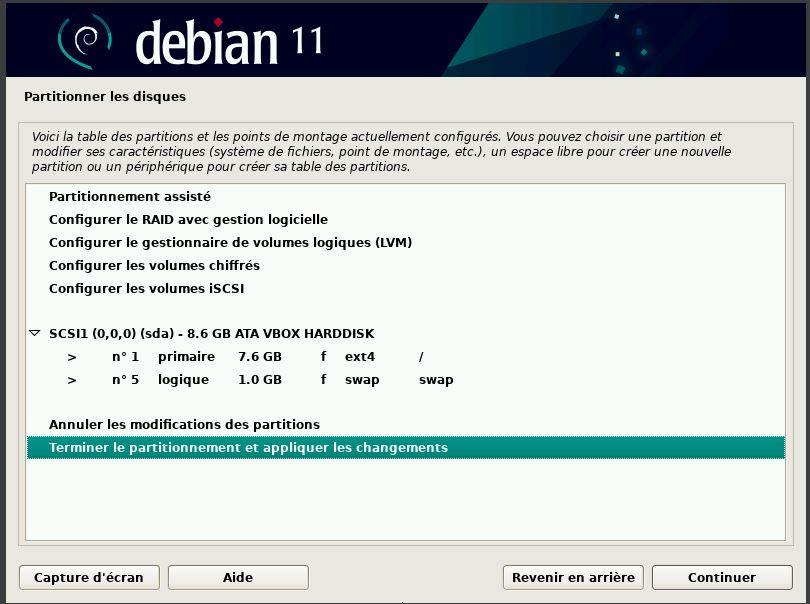

Client Linux (debian)
Vous devez choisir votre nom de machine
Vous devez choisir votre mémoire vive (RAM) et votre processeur.
Vous devez choisir votre espace de disque dur alloué.
Vous pouvez choisir "finish".
Vous devez choisir votre fichier ISO qui est donc Debian 11.
Vous pouvez choisir "Graphical install" car pour un client il est préférable d'avoir une interface graphique.
Vous devez choisir votre langue.
Vous devez choisir votre nom de systeme.
Vous devez choisir votre mot de passe.
Vous devez choisir votre nom d'utilisateur.
Vous devez choisir votre identifiant.
Vous devez choisir votre mot de passe qui correspond à votre identifiant.
Vous devez choisir le partitionnement du disque, le mieux est de laisser le disque entier.

Vous devez choisir l'option "Terminer...".
Vous devez choisir "Oui" pour appliquer les changements.
Vous devez choisir "non" pour ne pas analyser un autre support d'installation.
Vous devez choisir votre langue pour le mirroir de l'archive.
Vous pouvez laisser le domaine vide.
Vous devez faire "non".
Vous devez choisir votre interface graphique preferé.
Vous devez choisir "OUI" pour installer le GRUB.
Vous devez choisir votre disque dur.
Vous devez choisir "Continuer".
Et voila votre installation est terminé.